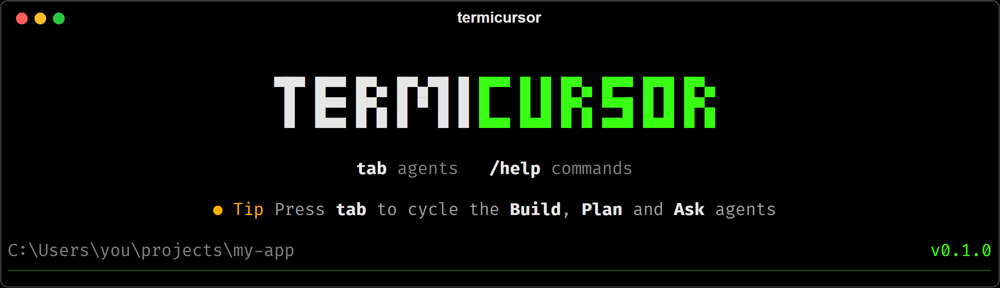
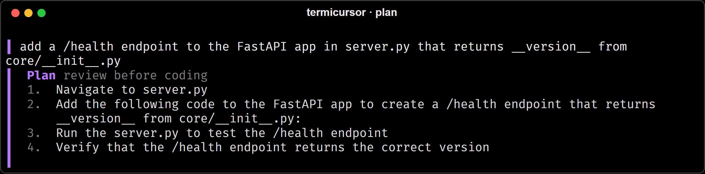
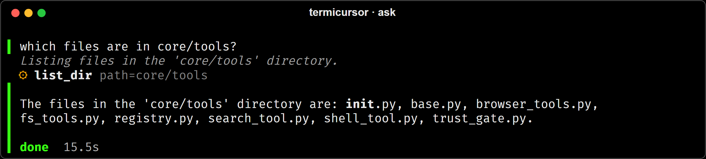
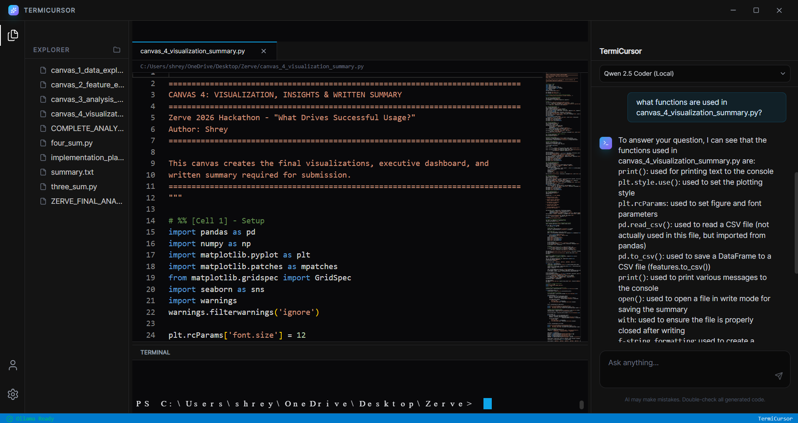

Ask · read-only
Ask about your code
Questions get direct answers. It can open files and search the index, but it can't edit anything or run commands.
TermiCursor plans the work, edits files, runs commands and checks the result, powered by local models through Ollama. It asks before anything risky, and your code stays on your PC.
pip install git+https://github.com/MShreyash09/TermiCursor.git

Press tab in the terminal, or use the switch in the app.
Questions get direct answers. It can open files and search the index, but it can't edit anything or run commands.
It writes a step-by-step plan and stops. Edit the steps, ask for changes, or approve it. Only then does it start coding.
It plans when the task needs it, then edits files, runs your tests and checks the result, asking before anything risky.
A plan you can change is better than a diff you have to undo. Remove steps, add steps, or type "use pytest, not unittest" and it plans again.

It can open files and search a local index of your project before it answers, and every file it opens shows up as it happens. Ask mode only has read-only tools, so a question can't turn into an edit.

It works through a task one tool call at a time, and you can watch every step.
When you open a folder, it indexes the project on your machine: language-aware chunks, local embeddings, and a vector store on disk. The agent can search it by meaning to find the right files.
Runs your builds and tests, reads the output, and fixes what failed.
Every shell command asks first. So do deletes and writes outside the project.
Opens your app in Edge, reads the page and console errors, and records a video of the whole session for you to watch.
Reopen a folder and it knows what earlier sessions did there, so it picks up where you left off.
Any Ollama model, switchable in Settings. Groq is there if you want cloud speed, and it's off unless you turn it on.
Is this a question or a task? Questions get answered right away.
Bigger tasks become a short list of steps. In Plan mode, you review it first.
One tool call at a time: read, write, search, run a command, open a page.
It checks the result and leaves a trail: command logs, changed files, browser recordings.
Open a folder, and the file tree, editor, terminal and agent panel are all there. You see the live plan, approve actions as they come up, and every artifact the agent leaves behind.

Yes. TermiCursor is open source under the MIT license. With Ollama there's nothing to pay for.
Windows 10 or 11 and Ollama. On first run the app offers to download its default models (about 2.2 GB). 8 GB of RAM is a comfortable minimum.
qwen2.5-coder:3b for the agent and nomic-embed-text for search by default.
You can pick any Ollama model in Settings, or switch to Groq.
Not when you use Ollama. The only network traffic is update checks, model downloads, and pages the agent opens. Choose Groq and your prompts and the code the agent reads go to Groq.
It asks before running commands, deleting files, or writing outside the project folder, so you review each risky step. Keep your project in git so every change is easy to undo.
The desktop app is Windows-only for now. The terminal version is plain Python
(pip install above), so it may work elsewhere, but Windows is what's tested.